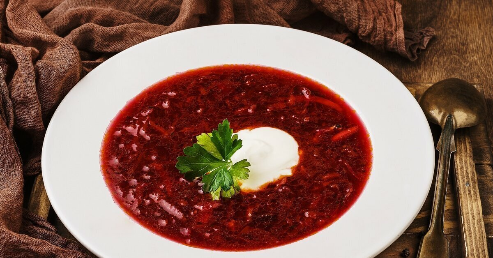
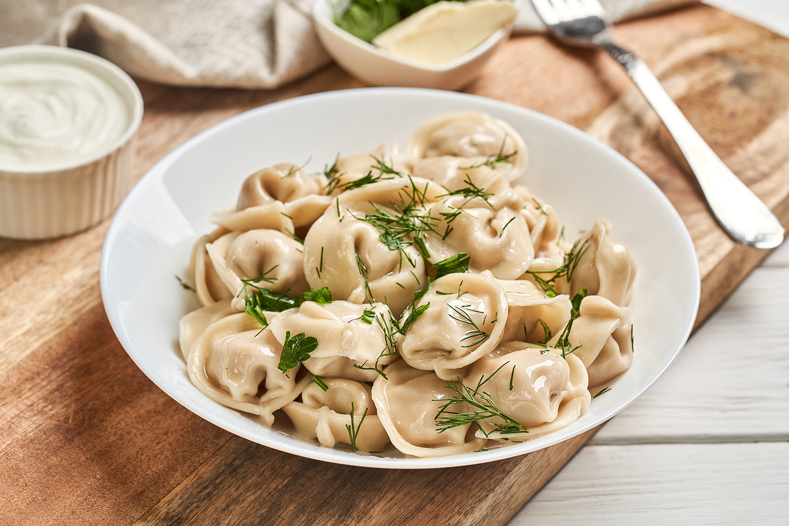
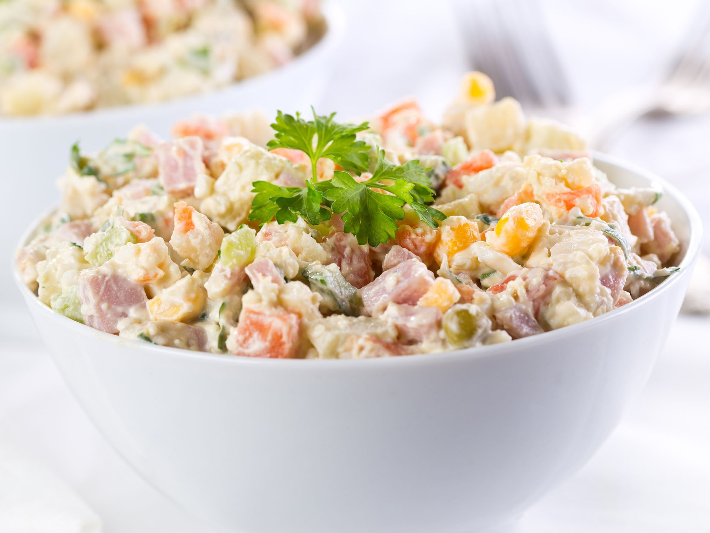
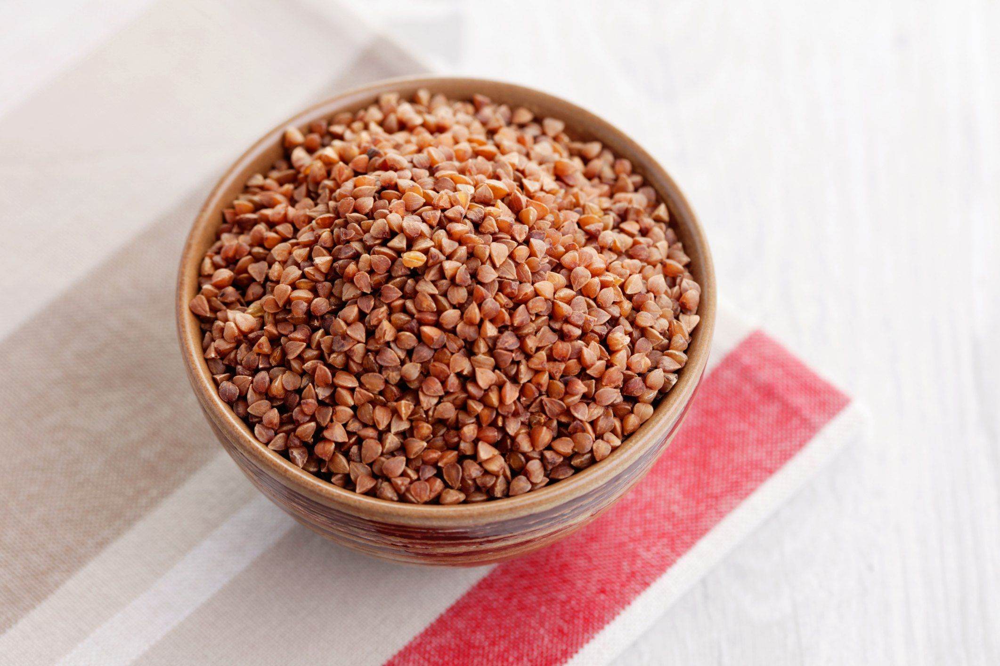
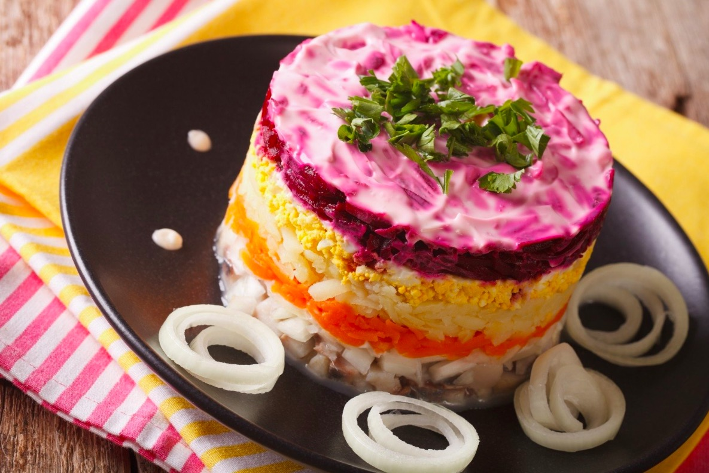

Рейтинг блюд русской кухни
Название блюда
Оценка
Ссылка на рецепт
Фото блюда
Борщ
10
Рецепт борща

Пельмени
9
Рецепт пельменей

Оливье
8
Рецепт оливье

Каша гречневая
6
Рецепт гречневой каши

Селедка под шубой
4
Рецепт селедки под шубой
